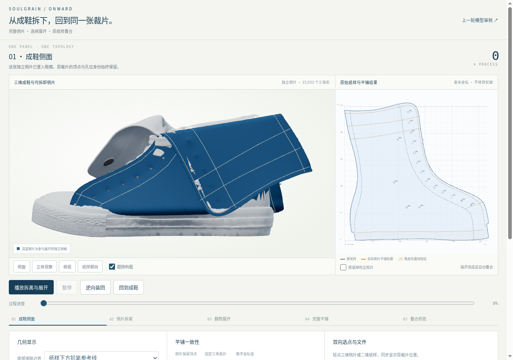
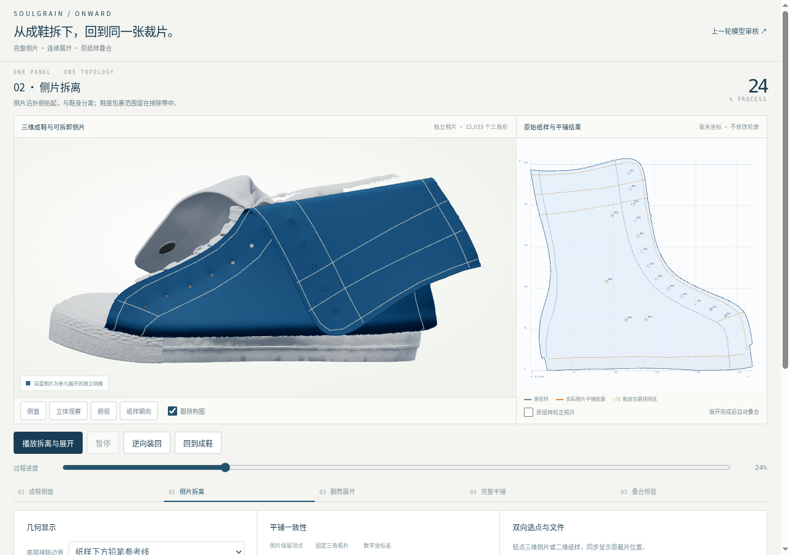
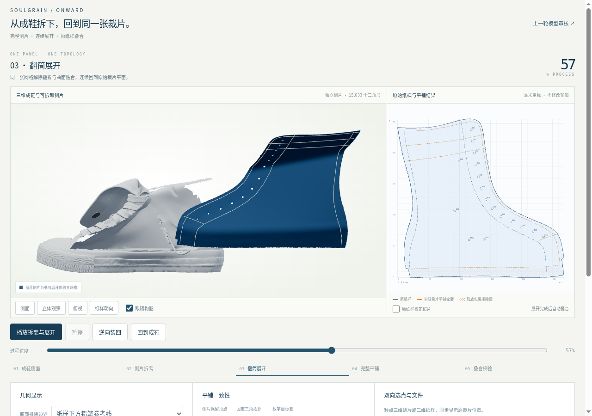
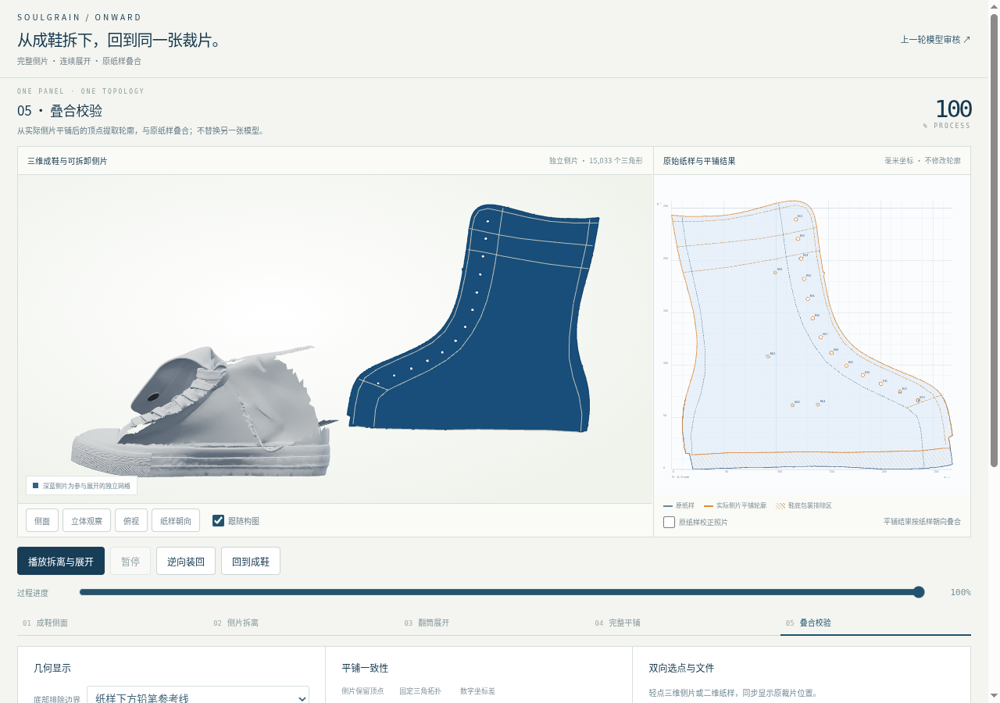
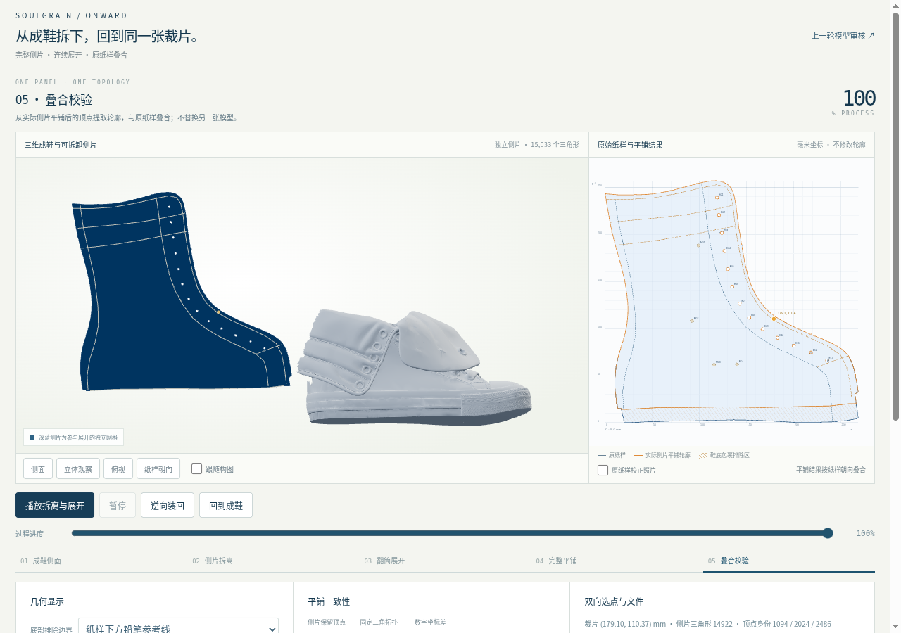

这是纸样驱动的替代鞋侧，在独立衍生模型上演示拆离与连续展开。原始 AI 鞋模和此前页面保留。默认鞋底包覆边界仍为待确认的纸样参考线。
视频逐帧记录实际页面的连续几何，不作为实时帧率证明。实际性能数据见浏览器报告；尚未进行 iPad Safari 实机测试。





# SoulGrain ONWARD · 鞋侧拆离与真实裁片对照 这一轮把可展开的纸样侧片直接放入独立衍生鞋模：从成鞋状态向外拆离，连续解除弯折，最后平铺并叠合原裁片。拆离前后是同一张三角网格，孔位和每个表面点都保留二维身份。 这需要用真实纸样重建一块替代侧片。上传 AI 模型的旧侧面没有裁片对应关系，不能将它直接称为可准确展开的实物面料。新的深蓝侧片替代相应旧表面，原模型和上一轮页面保留。 ## 审核时重点看什么 1. 在“成鞋侧面”确认侧片与鞋模的贴合，再播放拆离，观察保留鞋体是否出现对应缺口。 2. 暂停在展开途中，打开同一三角网格，检查翻筒和底部弯折的连续性。 3. 到“完整平铺／叠合校验”，打开原纸样校正照片，比较保留轮廓、孔位和结构参考线。 4. 在二维或三维选点，核对另一侧的对应位置，再逆向装回；反复播放不应改变原裁片坐标。 5. 比较三种底部配置。默认长铅笔参考线的工艺含义尚未确认，需用实物确定真正被鞋底包裹的范围。 “数字坐标差”回答侧片是否回到现有数字纸样；它不回答原纸样标定是否绝对准确、成鞋隐藏区是否已恢复真实工艺。 ## 交付与证据 网页可导出当前底部配置的毫米 SVG 和完整对应 JSON。预生成 GLB 与 Blender 工程保存默认配置的独立侧片及动画。详细实现、重建命令和文件索引见 [工程说明](../../modeling/detachable-side-panel/README.zh-CN.md)。 验收数据位于 `public/detachable-side-panel/verification/`，构形诊断位于 `public/detachable-side-panel/panel-validation.json`，可编辑资产哈希位于 `editable-export-validation.json`。报告必须与当前 `panel-data.json` 的 SHA-256 对应。截图与过程视频记录实际页面；逐帧录制不能替代性能测试。 ## 实物验证前仍不能确认的内容 - 纸样下方参考线是否就是真正的鞋底包覆边界。 - 隐藏深度、翻折半径和底部弯入方式是否符合真实缝制及绷帮。 - 未独立标定的鞋模比例与实物成鞋尺寸之间的关系。 - 真实面料的伸长、接触、自相交和安装空间。 - iPad Safari 实机性能；Chromium 触控模拟仅证明该测试环境下的操作结果。 平铺终点以原数字裁片为约束，成鞋外观以照片和模型为参考，尚未把两者之间的推定构形认证为工厂制造过程。本轮不改官网、工作台或旧鞋模，也不将尚未验证的尺寸作为生产定位依据。